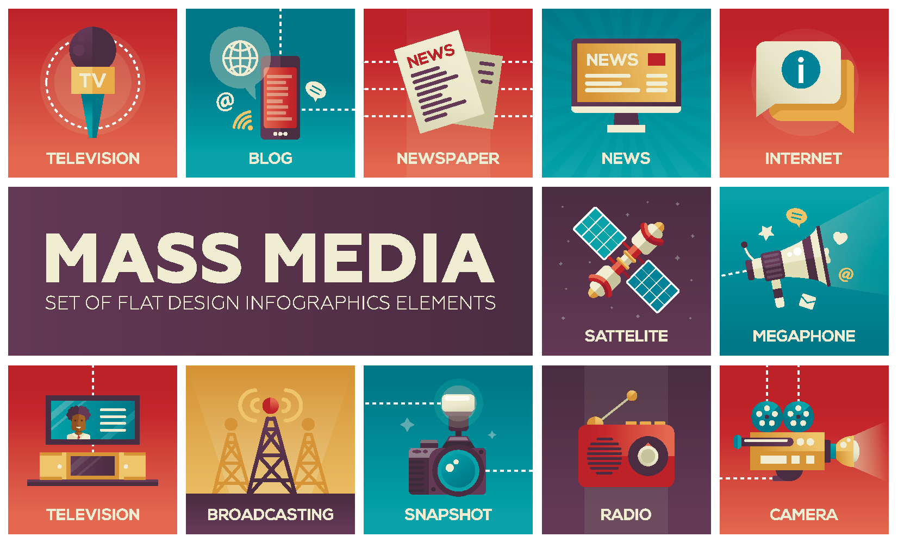

The mass media are means of communication, such as books, newspapers, recordings, radio, movies, television, mobile phones and the Internet, that can reach a large audience.
Although the first printed books had appeared long before in China, the term ‘mass media’ we use today was coined with the creation of print media, which started in Europe in the Middle Ages. This is also considered the first example of mass media due to the large number of readers then.
Since the mid-twentieth century new technologies have been developed, which helped to diversify mass media and make them an inseparable part of our lives. The role of the mass media is not only to entertain and amuse the masses. Its most important role is to provide information and news about events in different parts of the world as they occur. Educating people about their rights and responsibilities is another function of mass media.
Until recently, mass media forms were classified into six categories according to the sequence of their advent: print, recordings, cinema, radio, television and the Internet. Each form has its own characteristic content types, creative artists and business models. In the early 21st century, with the explosion of mobile communication technology, the mobile phone has emerged as a new and unique media channel. Video and computer games have also developed into a mass media form.
The Internet and mobile communication is now the most popular means of receiving information and interacting with people through email, instant messaging, apps, search engines, blogs, social networks and other services. Most print and broadcast media have a presence on the web by having video adverts or Quick Response Codes (QR Codes) that link to specific websites.
Each form of mass media has had an important impact on society, for example, books have helped people to educate themselves while newspapers have recorded daily events. Magazines were the first visual medium before the advent of television, which together with radio, brought entertainment and news programmes into people's homes. However, all these media had to change and adapt to the advent of the Internet and Digital Media Age. New digital media forms are more personal and social as they allow people to connect with each other, collaborate and share information and personalise their experiences.